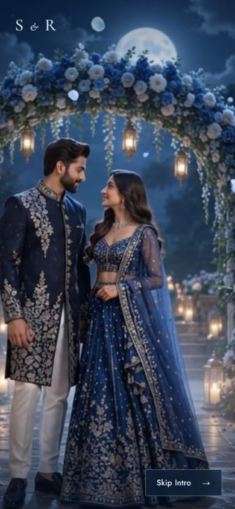
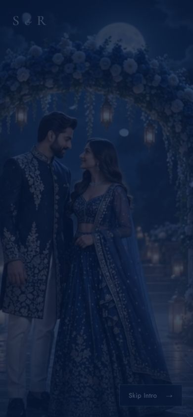
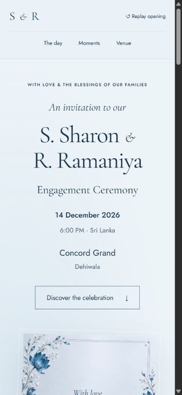

Acceptable with framing compromises. Faces and joined hands remain visible. The arch is cropped laterally; outer clothing and the groom's free arm are tight at later frames. A native 9:16 composition would improve the full-scene presentation.
These are browser-decoded frames of the real MP4 paused at exact timestamps in an isolated viewer, with the unchanged production cover crop, shade and skip layout. Live end/replay behavior is assessed separately. No production styles were changed.
47% protects more of the groom's left edge but crops more of the bride's right fabric. 53% does the reverse. Neither restores the full arch. Center (50%) remains the balanced setting.
The final frame fades down through navy, then the icy-blue React hero appears. These sequential live captures are approximate transition stages; the twelve timestamp captures above are exact paused media frames.


